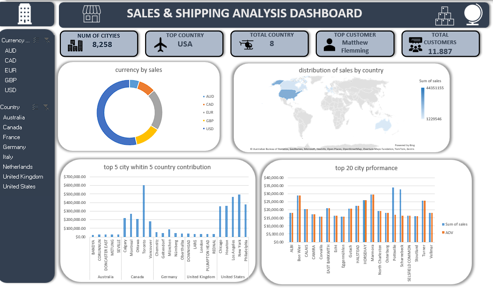
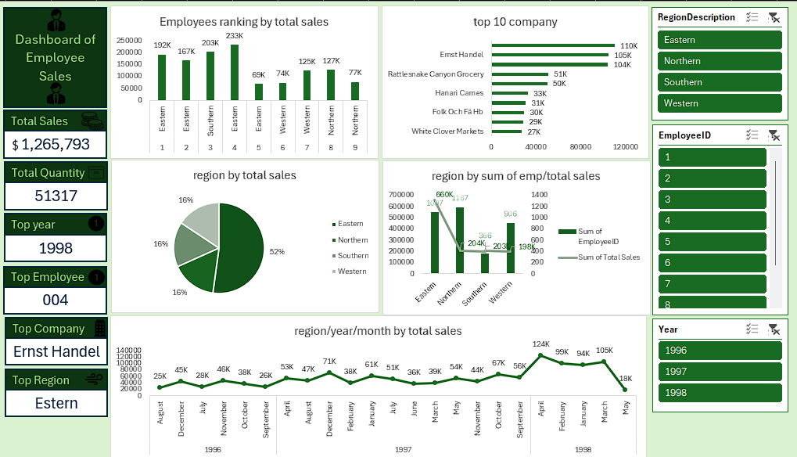
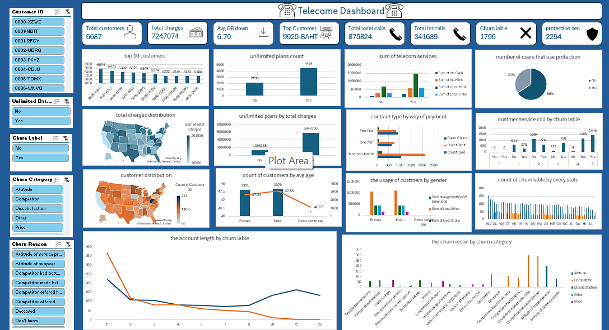
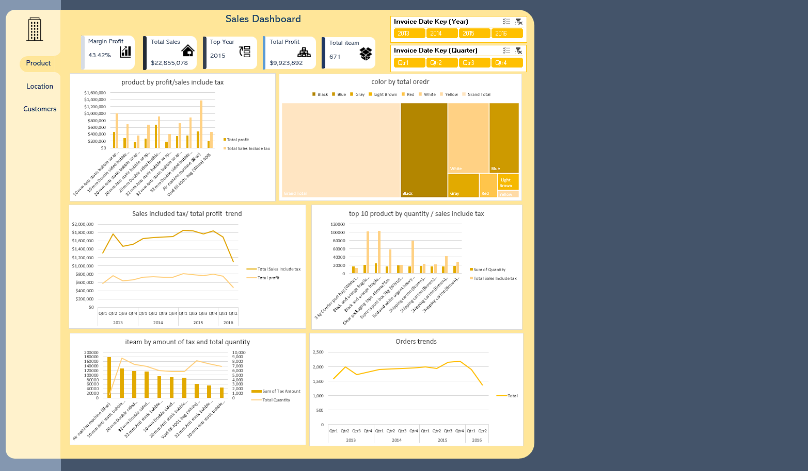

My Projects

Global Sales & Shipping Dashboard
Objective: An interactive dashboard to analyze global sales data, identify top-performing countries and customers, and monitor sales distribution by currency.
Tools Used: Excel, Power Pivot, Power Query

Employee Sales Performance Dashboard
Objective: A comprehensive dashboard for managers to track and evaluate employee sales performance by region, company, and over time.
Tools Used: Excel, Power Pivot, Power Query

Telecom Customer Churn Analysis
Objective: A detailed dashboard analyzing customer churn, identifying key reasons for leaving, and providing insights into customer demographics and service usage.
Tools Used: Excel, Power Pivot, Power Query

Product Sales & Profitability Dashboard
Objective: An analytical dashboard focusing on key financial metrics like total sales, profit, and margins, with trends analyzed by product and time period.
Tools Used: Excel, Power Pivot, Power Query